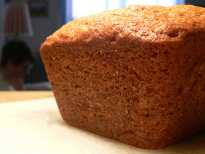

Nigella's fruity banana bread

Thanks to Nigella by way of Barletta for this delicious banana bread recipe, the first one I’ve made. Banana bread has always been one of my favorite treats, whether with peanut butter, cream cheese, nutella, or just plain.
I’m not experienced enough to know how this bread compares to other recipes. The three I have in front of me are all pretty different. This one uses melted butter, orange zest, and orange juice–soaked apricots (which I left out). Mark Bittman uses a mixture of white and whole wheat flour, and he adds coconut. The Moosewood Cookbook has you soak bananas in strong, black coffee before incorporating them into the dough. Everyone wants to add something special to make the bread unique. Mom’s version has been reliably simple and perfect, and I don’t remember any extra junk in it other than the requisite nuts.
If you enjoy banana bread, this variation is worth trying, although after eating more than half the loaf, I’m getting a little disgusted with the faint odor of the melted butter. That’s probably in my head, however, because butter always melts. If you use the apricots, you are unlikely to notice the butter. I used roasted almonds because it’s all I had; walnuts would probably be better. The baking time is pretty close to accurate, a first for a Nigella recipe in my experience.
Fruity banana bread
Time: About 1 1/2 hours, plus 1 hour for soaking apricots
4 ounces (1/2 cup, packed) dried apricots
1/3 cup orange juice
Nonstick cooking spray or vegetable oil, for greasing pan
1/4 pound (1 stick) unsalted butter
1 1/3 cups all-purpose flour
2 teaspoons baking powder
1/2 teaspoon baking soda
1/2 teaspoon salt
3/4 cup sugar
Finely grated zest of 1 orange
2 large eggs
1 cup (about 3 medium) mashed very ripe bananas
1/2 cup mixed nuts, chopped
1 tablespoon turbinado sugar or granulated white sugar
Using kitchen shears, cut each apricot in half lengthwise. Holding halves together, cut four or five times crosswise. In a small saucepan, combine apricot pieces and orange juice. Bring to a boil, then remove from heat. Allow to rest until apricots have absorbed most of the liquid, about 1 hour.
Heat oven to 325ºF. Place a baking sheet in oven. Spray or oil a 9-by-5-inch loaf pan, and if desired, line with parchment paper. Melt butter in a microwave oven or small saucepan; reserve.
In a mixing bowl, combine flour, baking powder, baking soda, and salt; set aside. In a large bowl, blend together reserved butter, 3/4 cup sugar, and orange zest. Mix in eggs one at a time, then mashed bananas, apricots, and nuts. Stir in flour mixture one-third at a time, stirring well after each addition.
Scrape dough into pan, and sprinkle with turbinado sugar. Bake until a toothpick inserted into center comes out clean, 1 to 1 1/4 hours. Place pan on a rack to cool. To serve, remove from pan, and slice thinly. Serve at room temperature.
Comments
I use the Bittman recipe with the whole wheat flour and generally use extra nuts and no coconut. Of course, since I don’t eat anything with banana in it I have no idea how it actually tastes, but folks seem to like it.
Mmm… banana bread. I just made a loaf myself, but I just stick to the classic Joy of Cooking recipe. On a frigid day like today, I hardly need an excuse to use my oven. But for banana bread… oh yes, please.
Add a comment